Zum Online-Shop
Zum Online-Shop»Am Anfang wurde das Universum erschaffen. Das machte viele Leute sehr wütend und
wurde allenthalben als Schritt in die falsche Richtung angesehen.«
– Douglas Adams
2 Einstieg in die Praxis
Nach der theoretischen Beschreibung objektorientierter Programmierung und ihrer Merkmale folgt ein tieferer Einstieg in Objective-C und einige praktische Beispiele für den Umgang mit Klassen und Objekten. Die Einführung im ersten Abschnitt macht Sie mit der Syntax von Objective-C und der Entwicklungsumgebung Xcode vertraut. Dabei machen Sie direkt die ersten Schritte mit Xcode und erhalten einen Einblick in die wichtigsten Grundlagen. Um den Blick auf den Kern des Themas nicht durch Nebensächlichkeiten zu versperren, sind die folgenden Beispiele Kommandozeilenprogramme, also keine vollständigen iPhone-Applikationen. In Abschnitt 2.2, »Das erste iOS-Projekt«, geht es dann ans Eingemachte. Dort erstellen Sie die erste eigene iPhone-App.
Voraussetzung für das Nachvollziehen der Beispiele ist, dass Sie das aktuelle iOS-SDK mit Xcode 4 installiert haben. Wie Sie es erhalten, haben Sie ja bereits in Kapitel 1 erfahren. Die nachfolgenden Schritte zum Erzeugen eines neuen Projekts in Xcode sind immer gleich. Machen Sie sich mit diesem Vorgehen vertraut, da die folgenden Kapitel das Erzeugen eines neuen Projekts als bekannt voraussetzen.
Öffnen Sie Xcode, und wählen Sie im Startbildschirm den Punkt Create a new Xcode project (siehe Abbildung 2.1).
Abbildung 2.1 Erzeugen eines neuen Xcode-Projekts
Es öffnet sich automatisch die Template-Übersicht von Xcode und bietet verschiedene Arten von Projekten an. Wählen Sie dort in der linken Spalte mac os x · application und anschließend rechts in der Übersicht der verfügbaren Templates das Icon Command Line Tool (siehe Abbildung 2.2).
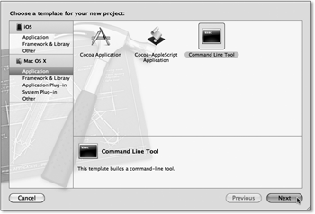Abbildung 2.2 Anlegen eines Foundation-Projekts
Nach Betätigen des Buttons Next fordert Xcode Sie auf, einen Projektnamen und -typ festzulegen. Als Namen verwenden Sie »First Steps« und als Typ Foundation (siehe Abbildung 2.3). Danach klicken Sie auf den Button Next. Mit dem letzten Dialog des Wizards legen Sie das Verzeichnis Ihres Projekts fest. Dort können Sie außerdem noch festlegen, dass Xcode ein lokales Git-Repository für Ihr Projekt anlegt. Um gleich richtig anzufangen, aktivieren Sie in diesem Dialog bitte die Checkbox Create local git repository for this project. GIT [10](http://git-scm.com/) ist ein SCM-System (Source-Code-Managementsystem), das von Ihren Quellcodedateien beliebig viele Versionen speichern und verwalten kann.
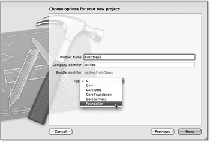Abbildung 2.3 Name und Typ des neuen Projekts festlegen
| Versionsverwaltung |
|
Wer sich jemals im Dschungel seiner verschiedenen, über unzählige Ordner und Rechner verstreuten Versionen des Sourcecodes eines Projekts verirrt und aus dem wirren Wust keine übersetzungsfähige Version mehr zusammenbekommen hat, der wird Versionsverwaltung auch für kleine Projekte schätzen. Für die Zusammenarbeit mit anderen Entwicklern ist sie schlicht unverzichtbar. |
|
Die Mutter aller Versionsverwaltungen ist CVS, das Concurrent Versions System, das lange Zeit der Standard, gerade im Open-Source-Bereich war. Aufgrund zahlreicher konzeptioneller Eigenheiten ist es aber nicht mehr zeitgemäß und wurde weitestgehend von den Systemen Subversion und GIT abgelöst. |
|
GIT wurde ursprünglich vom Linux-Erfinder Linus Torvalds entwickelt und hat sich im Open-Source-Bereich gerade für große Projekte zum Standard entwickelt. Der Linux-Kernel, Android, Gnome, VLC und viele andere bekannte (und noch mehr unbekannte) Projekte verwenden GIT. Durch seinen bewährten Einsatz bei der Verwaltung des Linux-Kernels hat es seine Eignung auch für große Projekte bereits erfolgreich unter Beweis gestellt. |
|
Bis zur Version 4 hat Xcode GIT nicht unterstützt und wurde mit der Einführung der neuen Version zum Standard-SCM der IDE. Sie sollten jedes neue Xcode-Projekt als GIT-Repository einrichten, sofern Sie nicht ein anderes Repository verwenden wollen. Einen umfassenden Einblick in die Arbeit mit GIT bietet Kapitel 7, »Jahrmarkt der Nützlichkeiten«. |
|
Die Sourcen aller Beispiele im Buch finden Sie übrigens auch in einem GIT-Repository: git@github.com:hinkeldei/iPhone.git |
Nach Abschluss des Template-Wizards öffnet sich das Hauptfenster von Xcode. Im linken Teil des Fensters, dem Projekt-Navigator, befindet sich in der Gruppe Sources die Hauptdatei main.m des neuen Projekts. Durch Auswählen der Datei öffnet sich im rechten Teil des Xcode-Fensters die Datei im Editor.
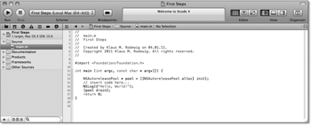Abbildung 2.4 Die Hauptdatei im Xcode-Editor.
| Ansichtssache |
|
Xcode ist ein sehr komplexes Werkzeug, das der Benutzer an vielen Stellen individuell an seine Bedürfnisse anpassen kann. Die Xcode-Screenshots in diesem Buch weichen an der einen oder anderen Stelle mitunter von der Standard-Darstellung von Xcode ab. Wie Sie Xcode selber an Ihre Bedürfnisse anpassen können, zeigt das Kapitel 7. |
Der Inhalt der Datei main.m ist übersichtlich:
#import <Foundation/Foundation.h>
int main (int argc, const char * argv[]) {
NSAutoreleasePool * pool =
[[NSAutoreleasePool alloc] init];
NSLog(@"Hello, World!");
[pool drain];
return 0;
}
Listing 2.1 »Hello World« in Objective-C
Eingebettet in die C-Funktion main, befindet sich Objective-C-Code. Die Ausführung eines C-Programms beginnt immer in dieser Funktion, und sowohl Objective-C als auch C++ haben diese Konvention übernommen. Eine Erläuterung zum NSAutoReleasePool finden Sie in dem Abschnitt über Speicherverwaltung an Ende dieses Kapitels. Dieses Thema ist bei den folgenden Beispielen noch nicht relevant.
Lassen Sie das Programm von Xcode übersetzen und ausführen. Dies erfolgt entweder
über den Button Run, links oben in der Toolbar, über den Menüpunkt Project · Run oder über das Tastenkürzel  + .
+ .
Da das Programm nur ein Konsolenprogramm ist, öffnet sich durch den Run-Befehl kein Fenster. Sie können die Ausgabe des Programms über die Konsole von Xcode verfolgen. Wählen Sie dazu über dem Projekt-Navigator das Symbol für den Log-Navigator (siehe Abbildung 2.5).
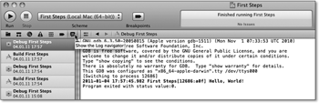Abbildung 2.5 Der Log-Navigator von Xcode zeigt die Konsole.
Neben den Ausgaben des Debuggers zeigt das Konsolenfenster in Fettschrift die Ausgabe des Programms an:
2011-01-04 17:57:45.982 First Steps[12686:a0f] Hello, World!
Das Hin- und Herschalten zwischen den verschiedenen Ansichten von Xcode kann mit der Zeit umständlich werden. Bei intensiver Nutzung von NSLog ist es sinnvoll, das Programm Konsole von OS X zu verwenden, da dort alle Konsolenmeldungen des Betriebssystems und der Programme ausgegeben werden. Sie finden es im Ordner /Programme/Dienstprogramme. Wenn Sie im Filterfeld oben rechts den Namen des aktuellen Xcode-Projekts angeben und als Quelle im linken Teil des Fensters Konsolenmeldungen auswählen, sehen Sie ausschließlich die Ausgaben Ihres Programms:
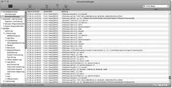Abbildung 2.6 NSLog-Ausgabe in der Konsole
Der Nachteil daran ist, dass das Konsolenfenster sich nicht automatisch aktualisiert, sobald es eine Änderung gibt. Eine Alternative ist daher das Betrachten der Logdatei im Terminal (/Programme/Dienstprogramme/Terminal) über den folgenden Befehl:
# tail -f /var/log/system.log | grep "First Steps"
Abbildung 2.7 Die Konsolenausgabe im Terminal

2.1 Hefte raus, Klassenarbeit! – Die Arbeit mit Klassen
Dieser Abschnitt demonstriert die praktische Arbeit mit Klassen. Der Quelltext einer Klasse verteilt sich per Konvention auf zwei Dateien: auf die Headerdatei mit der Dateiendung .h und auf die Implementierungsdatei mit der Endung .m. Die Headerdatei enthält die Schnittstelle (das Interface) der Klasse nach außen, während die Implementierungsdatei die Umsetzung enthält, auf die andere Klassen keinen Zugriff haben. Diese Aufteilung hat Objective-C von C geerbt. Dort tragen die Headerdateien ebenfalls die Endung .h und die Implementierungsdateien die Endung .c.
Die Implementierungsdatei enthält den ausführbaren Code einer Klasse. Die Implementierung einer Klasse ist geheim. Sie geht nur den Programmierer etwas an. Damit andere Programmierer diese Klasse benutzen können, reicht es, die Interface-Datei weiterzugeben. Über die Interface-Datei ist genau definiert, welche Attribute und Methoden eine Klasse besitzt. Auf diese Weise ist es möglich, kompilierte Klassen zur freien Verwendung weiterzugeben, ohne den Code offenlegen zu müssen. Wenn Sie die Festplatte Ihres Macs nach den Klassen des Foundation-Frameworks durchsuchen, werden Sie einen Haufen Interface-Dateien finden, aber keine Implementierungsdateien. Apple verrät Ihnen nur, wie Sie die Foundation-Klassen verwenden können, aber nicht, wie sie programmiert sind (siehe Abbildung 2.8).
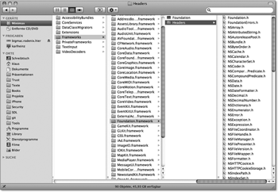Abbildung 2.8 Die Interface-Dateien des Foundation-Frameworks
Um eine eigene Klasse zu erstellen, legen Sie im ersten Schritt in Xcode über den Menüpunkt File · New · New File... die Dateien dafür an. Wählen Sie im Dialogfenster links Mac OS X · Cocoa und in der Übersicht rechts anschließend Objective-C Class (siehe Abbildung 2.9).
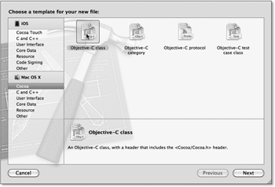Abbildung 2.9 Eine neue Objective-C-Klasse
Nach dem Drücken von Next gelangen Sie zu einem weiteren Dialog, in dem Sie den Namen und die Oberklasse Ihrer neuen Klasse eingeben müssen (siehe Abbildung 2.10).
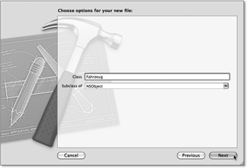Abbildung 2.10 Auswahl der Oberklasse
Die Klasse nennen Sie »Fahrzeug« und als Oberklasse können Sie die voreingestellte Klasse NSObject verwenden. Per Konvention beginnen Klassennamen mit einem Großbuchstaben. Auch hier müssen Sie den Button Next drücken, damit Sie zum nächsten Dialog gelangen. Dort brauchen Sie nur noch den Ablageort Ihrer neuen Klasse festzulegen.
Dort können Sie über das Dropdown-Feld Group festlegen, in welcher Gruppe des Projektnavigator Xcode die Klasse anzeigen soll. Der voreingestellte Wert First Steps kann bleiben, denn in dieser Gruppe befindet sich bereits die Datei main.m.
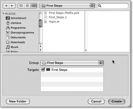Abbildung 2.11 Der Name der neuen Klasse
Nach dem Anlegen der Klasse finden sich die Dateien Fahrzeug.h und Fahrzeug.m im Projektnavigator in der Gruppe Source:
Abbildung 2.12 Die Klasse »Fahrzeug« mit ihren beiden Dateien
Xcode erzeugt beide Dateien über Vorlagen. Die Headerdatei enthält die Klassendeklaration, während Sie in der Implementierung die Methoden init und dealloc finden. Fahrzeug.h importiert außerdem die Interface-Datei des Foundation-Frameworks:
#import <Foundation/Foundation.h>
@interface Fahrzeug : NSObject {
@private
}
@end
Listing 2.2 Headerdatei der »Fahrzeug«-Klasse
Die Implementierungsdatei ist etwas umfangreicher:
#import "Fahrzeug.h"
@implementation Fahrzeug
- (id)init {
self = [super init];
if (self != nil) {
// Initialization code here.
}
return self;
}
- (void)dealloc {
// Clean-up code here.
[super dealloc];
}
@end
Listing 2.3 Implementierungsdatei der »Fahrzeug«-Klasse
Interessant sind die beiden Methoden init und dealloc. Beide sind nicht in der Interface-Datei vorhanden, und doch müssen sie einen Sinn haben, denn irgendwer außerhalb der Klasse muss ja wissen, dass es beide Methoden gibt. Des Rätsels Lösung ist einfach.
2.1.1 Objekte erzeugen: alloc und init
Wie in Kapitel 1 beschrieben, ist eine Klasse die Konstruktionszeichnung für ein Objekt. Klassen können keine Daten speichern oder Berechnungen anstellen – man muss Objekte erzeugen, um Daten speichern und verarbeiten sowie Nachrichten senden und empfangen zu können. Ein Objekt ist nicht einfach vorhanden, man muss es vor seiner Verwendung erzeugen. Dies erfolgt über einen Methodenaufruf an die Klasse des Objekts (also eine Klassenmethode), mit der die Klasse angewiesen wird, ein Objekt von sich selbst zu erzeugen. Die dazu aufgerufene Methode trägt den Namen alloc.
| Die Klassenmethode alloc |
|
In der Datei NSObject.h können Sie sehen, dass alloc eine Klassenmethode ist: |
+ (id)alloc; |
|
Das vorangestellte Plus-Zeichen weist alloc als Klassenmethode aus. |
alloc erzeugt eine Instanz der jeweiligen Klasse, also ein neues Objekt. Das bedeutet aber nur, dass alloc den Speicher für das Objekt reserviert, alle Attribute auf 0 setzt und einen Zeiger auf das Objekt zurückliefert.
Ein mit alloc erzeugtes Objekt ist also leer. Um das Objekt direkt nach der Erzeugung zur Verwendung vorzubereiten, es also direkt mit sinnvollen Daten zu füllen, sollte unmittelbar nach dem Aufruf der Klassenmethode alloc an NSObject der Aufruf der Methode init oder einer anderen Initialisierungsmethode erfolgen. init ist ein Initializer (eine Initialisierungsmethode) des Objekts, der den aus anderen Programmiersprachen bekannten Konstruktoren ähnelt. Neben init sind natürlich auch andere Initializer mit Parameterübergabe möglich.
Alle Subklassen von NSObject erben oder überschreiben die Methode init. Die in der Datei Fahrzeug.m definierte Methode init überschreibt die von NSObject ererbte Methode. Das erklärt, warum die Methode vorhanden, nicht aber im Interface deklariert werden muss. Wäre die Methode nicht vorhanden, würde der Aufruf von init an die Klasse Fahrzeug einfach an die Superklasse, also an NSObject, weitergereicht und die init-Methode von NSObject verwendet.
| Die Objektmethode init |
|
Auch init finden Sie in NSObject.h, und Sie können ihren Methodentyp überprüfen: |
- (id)init; |
|
Es ist eine Objektmethode – erkennbar an dem vorangestellten Minus-Zeichen. |
init gibt nach erfolgreicher Ausführung einen Zeiger auf das initialisierte Objekt zurück (self). [11](Das muss aber nicht immer so sein: Es gibt beispielsweise Klassen, die bei unmöglicher Initialisierung nil zurückliefern.) Es ist wichtig, dass init oder eine andere Initialisierungsmethode der erste Methodenaufruf nach dem Erzeugen eines Objektes ist! Um ein Objekt verwenden zu können, sind also zwei Schritte notwendig. Der erste Schritt erzeugt das Objekt durch Aufruf der Klassenmethode alloc:
Fahrzeug *fahrzeug = [Fahrzeug alloc];
Der zweite Schritt initialisiert das neu erzeugte Objekt durch die Nachricht init an das Objekt selber:
fahrzeug = [fahrzeug init];
Der Einfachheit halber, und so empfiehlt es auch Apple, fasst man beide Aufrufe zusammen und bekommt so in einer Zeile ein schlüsselfertiges Objekt zurückgeliefert:
Fahrzeug *fahrzeug = [[Fahrzeug alloc] init];
2.1.2 Objekte löschen: release und dealloc
Ist ein Objekt am Ende seiner Lebenszeit angekommen, wird es gelöscht, d. h., alle Referenzen auf das Objekt werden entfernt und der vom Objekt belegte Speicher wird freigegeben. Dies erfolgt über die Methode release:
[fahrzeug release];
release ist ein wichtiges Instrument für die Speicherverwaltung, das im nächsten Kapitel eingehend thematisiert wird. Die Nachricht release kann, ohne dem Abschnitt über Speicherverwaltung zu sehr vorwegzugreifen, den Aufruf der Methode dealloc bewirken. Sie ist das Gegenstück zu init und auch in NSObject definiert. Über dealloc gibt ein Objekt seine verwendeten Ressourcen frei. Sie sollten diese Methode niemals direkt aufrufen, da sie ausschließlich von der Methode release aufgerufen wird.
Da die dealloc-Implementierung von NSObject nichts über die Ressourcen – das sind hier die benutzten Objekte, der benutzte Speicher usw. des Objekts – weiß, die eine Subklasse belegt, muss jede Subklasse eine eigene dealloc-Methode besitzen. Sie gibt zunächst alle eigenen Ressourcen frei und ruft anschließend die dealloc-Methode der Superklasse auf.
Sie können das Aufrufen der Methoden init und dealloc in der neuen Klasse selber nachvollziehen. Fügen Sie dazu in jeder der beiden Methoden die folgende Zeile hinzu:
NSLog(@"[+] %@", NSStringFromSelector(_cmd));
NSLog gibt eine Ausgabe an die Konsole aus. Die Formatierung erfolgt analog zu den aus C bekannten Format-Strings. Das heißt, innerhalb der Anführungszeichen stehen Konstanten und Platzhalter, und die Variablen für die Platzhalter folgen, durch Kommata getrennt, hinter den Anführungszeichen. In diesem Fall steht der Platzhalter %@, der für Objective-C-Objekte verwendet werden kann, für NSStringFromSelector(_cmd). Die Funktion liefert den Namen eines Selektors als Zeichenkette, und die implizit deklarierte Variable _cmd enthält den Selektor der aktuellen Methode. Also gibt die Anweisung den Namen der Methode aus, innerhalb derer sich diese Zeile befindet.
Das Ganze sieht also wie folgt aus:
- (id)init {
NSLog(@"[+] %@", NSStringFromSelector(_cmd));
[...]
Und in der Methode dealloc:
- (void)dealloc {
NSLog(@"[+] %@", NSStringFromSelector(_cmd));
[...]
Um die Klasse Fahrzeug verwenden zu können, müssen Sie dem Hauptprogramm noch die Interface-Datei der Klasse bekannt machen. Fügen Sie dazu im Kopf der Datei main.m die entsprechende Import-Anweisung ein:
#import "Fahrzeug.h"
Ein Objekt der Klasse Fahrzeug erzeugt innerhalb der Main-Funktion die folgende Anweisung:
Fahrzeug *fahrzeug = [[Fahrzeug alloc] init];
In der nächsten Zeile sorgt dann [fahrzeug release]; dafür, dass das Objekt wieder gelöscht wird. Das Programm ruft also beide Methoden, init und dealloc, auf. Die gesamte Datei main.m enthält damit den folgenden Code:
#import <Foundation/Foundation.h>
#import "Fahrzeug.h"
int main (int argc, const char * argv[]) {
NSAutoreleasePool * pool =
[[NSAutoreleasePool alloc] init];
NSLog(@"Hello, World!");
Fahrzeug *fahrzeug = [[Fahrzeug alloc] init];
[fahrzeug release];
[pool drain];
return 0;
}
Listing 2.4 Das erste Beispielprogramm
Nach dem Übersetzen und Starten des Projekts können Sie die Ausgabe auf der Konsole prüfen. Aus Gründen der Übersichtlichkeit ist das Datum in den Konsolenausgaben hier entfernt:
First Steps[21233:a0f] Hello, World!
First Steps[21394:a0f] [+] init
First Steps[21394:a0f] [+] dealloc
Neben dem unvermeidbaren »Hello, World!« zeigt die Ausgabe den Aufruf der init- und dealloc-Methoden der Klasse Fahrzeug an. Als kleinen Vorgriff auf das Thema Speicherverwaltung ändern Sie die Zeile
[fahrzeug release];
in:
[fahrzeug autorelease];
Damit fügen Sie das Objekt zum Autoreleasepool hinzu, den die Projektvorlage in der Main-Funktion angelegt hat. Sie überlassen also dem System das Entfernen des Objekts. Die Konsolenausgabe des Programms ist aber trotzdem gleich.
Wenn Sie die Zeile zum Entfernen des Objekts (egal ob über release oder autorelease) ganz entfernen, sehen Sie in der Konsolenausgabe, dass Ihr Programm nur die Methode init, aber nicht dealloc aufruft. Das ist im vorliegenden Beispiel nicht dramatisch, da das Programm nach dem Beenden ohnehin seinen gesamten Speicher freigibt. Nichtsdestotrotz liegt hier ein Speicherleck vor, und in einem komplexen Programm kann das Nichtfreigeben von unbenutzten Objekten üble Folgen haben. Es gilt daher grundsätzlich:
Jedes alloc braucht ein (auto)release!
Oder in der Sprache des Volksmundes:
Wer a(lloc) sagt, muss auch r(elease) sagen.
2.1.3 Initializer
Die Klasse Fahrzeug ist bisher noch nicht wirklich nützlich. Sie verfügt weder über Methoden, um irgendetwas zu tun, noch über Attribute, um Daten zu speichern. Damit die Klasse nicht nur Speicher belegt, bekommt sie nun einige Attribute, die fahrzeugtypische Daten speichern können. Zusätzlich erhält sie Methoden, um auf die Variablen zuzugreifen und um Operationen mit den in den Variablen gespeicherten Werten durchzuführen.
Interessant an einem Fahrzeug sind beispielsweise die folgenden Parameter:
- Preis
- Baujahr
- Geschwindigkeit
- Name
Mit den Attributen für diese Eigenschaften sieht die Klasse Fahrzeug wie folgt aus:
@interface Fahrzeug : NSObject {
@private
NSNumber *preis;
int geschwindigkeit;
NSString *name;
NSDate *baujahr;
}
@end
Listing 2.5 Schnittstelle der Klasse »Fahrzeug« mit Attributen
Den Preis nimmt eine Variable der Klasse NSNumber auf, die zur Speicherung von Zahlenwerten dient. Variablen dürfen natürlich aber auch »alte« C-Typen sein, und so ist die Variable für die Geschwindigkeit ein Integer, also kein Objekt, sondern ein einfacher Datentyp. Der Klasse NSNumber wird dann gerne der Vorzug gegenüber dem primitiven Datentyp gegeben, wenn der enthaltene Wert optional ist, also nicht vorliegen muss. Einen fehlenden Wert drücken Sie dabei durch den Wert nil aus. Der Preis des Fahrzeugs muss also nicht bekannt sein, die Geschwindigkeit hingegen schon.
Der Name des Fahrzeugs wird in einem String abgelegt. Cocoa Touch bietet dazu die Klasse NSString und die davon abgeleitete Klasse NSMutableString, die das nachträgliche Ändern des Strings erlaubt. Wer schon mal mit Zeichenketten in C gearbeitet hat, der weiß die Vorzüge eines eigenen Typs für Zeichenketten zu schätzen. Das Baujahr des Fahrzeugs nimmt eine Variable der Klasse NSDate auf, die einen genauen Zeitpunkt enthält.
Es wäre nun schön, wenn ein Objekt vom Typ Fahrzeug direkt bei der Initialisierung Werte entgegennähme, um damit die Attribute zu füllen. Das Objekt erst zu initialisieren, um dann mittels extra dafür implementierter Methoden die Attributwerte zu setzen, ist häufig umständlich. Glücklicherweise erlaubt Objective-C das Implementieren von unterschiedlichen Initializern in einer Klasse.
Zwar kann man in der Methode init bereits Werte in die Instanzvariablen setzen. Das sind aber mangels Eingabeparametern immer nur die gleichen Standardwerte und ergibt wenig Sinn, wenngleich dies in vielen Situationen ausreichend ist. Bei vielen Klassen ist es sehr hilfreich, dem Initialisierungsaufruf Parameter übergeben zu können, sodass das neu erzeugte Objekt direkt mit den gewünschten Werten versehen werden kann.
Die Klasse Fahrzeug erhält dazu eine neue Methode, die nach der Konvention mit dem Präfix init beginnen sollte. Diese Methode übernimmt alle gewünschten Werte und weist sie den Instanzvariablen zu:
-(id)initWithPreis:(NSNumber*)inPreis
geschwindigkeit:(int)inGeschwindigkeit
name:(NSString*)inName
baujahr:(NSDate*)inBaujahr;
Die Methode besitzt vier Parameter für die vier Attribute. Die Implementierung der Methode sieht demnach wie folgt aus:
-(id)initWithPreis:(NSNumber*)inPreis
geschwindigkeit:(int)inGeschwindigkeit
name:(NSString*)inName
baujahr:(NSDate*)inBaujahr {
NSLog(@"[+] %@", NSStringFromSelector(_cmd));
self = [super init];
if(self != nil){
preis = inPreis;
geschwindigkeit = inGeschwindigkeit;
name = inName;
baujahr = inBaujahr;
[preis retain];
[name retain];
[baujahr retain];
}
return self;
}
Listing 2.6 Initializer mit Parameterübergabe
Die drei retain-Aufrufe sind notwendig, um Speicherfehler zu vermeiden. Eine genauere Erklärung dazu finden Sie im Abschnitt über Speicherverwaltung.
Sie können jetzt diesen Initializer dazu verwenden, dass auch der Standardinitializer Werte setzen kann. Dazu verändern Sie einfach die Methode init so, dass sie die Methode initWithPreis:geschwindigkeit:name:baujahr: mit den gewünschten Werten aufruft. Diese kümmert sich um alles.
- (id)init {
NSLog(@"[+] %@", NSStringFromSelector(_cmd));
NSNumber *thePreis = [NSNumber numberWithInt:20000];
return [self initWithPreis:thePreis
geschwindigkeit:120
name:@"Herbi"
baujahr:[NSDate date];
}
Listing 2.7 Initialisierung über den designierten Initializer
init gibt also einfach den Rückgabewert von initWithPreis:geschwindigkeit: name:baujahr: zurück. Die Werte für diesen Aufruf sind in diesem Beispiel natürlich wenig sinnvoll, da sie hart im Programmcode verdrahtet sind. In der Praxis werden solche Werte dynamisch erzeugt, zumindest aber nicht fest in die init-Methode kodiert. Um das Prinzip der Initialisierung mit Argumenten zu zeigen, ist dies allerdings ausreichend.
Verfügt eine Klasse über Attribute, muss der Programmierer in der dealloc-Methode sicherstellen, dass alle Ressourcen freigegeben werden. Daher müssen Sie die dealloc-Methode der Klasse Fahrzeug um die neuen Attribute erweitertn:
- (void)dealloc {
NSLog(@"[+] %@", NSStringFromSelector(_cmd));
[preis release];
[name release];
[baujahr release];
[super dealloc];
}
Listing 2.8 Ressourcenfreigabe in »dealloc«
Für die drei Aufrufe von release gilt dasselbe wie weiter oben für die drei retain-Aufrufe: Die Erläuterung folgt in Abschnitt 2.4.
Die Klasse Fahrzeug besitzt nun also Attribute und einen Initializer, der diese Variablen beim Erzeugen füllt. Was jetzt noch fehlt, sind Methoden, um auf die Attributwerte zuzugreifen. Schließlich möchte man das Objekt ja benutzen, um etwas damit zu tun, beispielsweise um die Werte auszugeben.
Der Zugriff auf Attribute erfolgt grundsätzlich nie direkt, sondern über Accessoren (Zugriffsmethoden). In Objective-C 2.0 kann der Compiler diese automatisch erzeugen (siehe Abschnitt 2.4.3, »Propertys«); für ein fundiertes Verständnis ist es aber notwendig, das Prinzip der Accessoren nachzuvollziehen.
2.1.4 Accessoren
Jede Instanzvariable erhält zwei Accessoren: einen Getter zum Lesen der Daten und einen Setter zum Schreiben. Dazu erweitern Sie das Interface der Klasse Fahrzeug um die folgenden Zeilen:
#pragma mark Getter
-(NSNumber*)preis;
-(int)geschwindigkeit;
-(NSString*)name;
-(NSDate*)baujahr;
#pragma mark Setter
-(void)setPreis:(NSNumber*)inPreis;
-(void)setGeschwindigkeit:(int)inGeschwindigkeit;
-(void)setName:(NSString*)inName;
-(void)setBaujahr:(NSDate*)inBaujahr;
Listing 2.9 Accessoren für die Klasse »Fahrzeug«
Die beiden #pragma-Direktiven sind Anweisungen an Xcode, damit es im Menü mit der Methodenliste die Überschriften Getter und Setter einfügt. Für den Compiler sind diese Direktiven nicht von Belang, und sie dienen lediglich der Übersichtlichkeit. Bei Klassen mit vielen Methoden kann das von großem Nutzen sein.
In Objective-C ist es Konvention, dass der Getter eines Attributs den Namen des Attributs bekommt. Der Setter hingegen bekommt den Namen des Attributs mit dem Präfix set. Die Implementierung der Accessoren ist simpel und häufig reine Tipp-Arbeit. Die Getter geben einfach den Wert des Attributs zurück:
#pragma mark Getter
-(NSNumber*)preis{
NSLog(@"[+] %@", NSStringFromSelector(_cmd));
return preis;
}
-(int)geschwindigkeit{
NSLog(@"[+] %@", NSStringFromSelector(_cmd));
return geschwindigkeit;
}
-(NSString*)name{
NSLog(@"[+] %@", NSStringFromSelector(_cmd));
return name;
}
-(NSDate*)baujahr{
NSLog(@"[+] %@", NSStringFromSelector(_cmd));
return baujahr;
}
Listing 2.10 Die Getter der Klasse »Fahrzeug«
Die Setter für einfache Datentypen weisen den neuen Wert einfach dem Attribut zu. Bei Objekten ist es etwas komplizierter. Da müssen Sie wegen der Speicherverwaltung dem neuen Wert ein Retain schicken, den alten Wert freigeben und schließlich den Attributwert setzen. Sie wissen ja schon: Genaueres dazu erfahren Sie in Abschnitt 2.4. Für die Klasse Fahrzeug sieht das dann so aus:
#pragma mark Setter
-(void)setPreis:(NSNumber*)inPreis {
NSLog(@"[+] %@", NSStringFromSelector(_cmd));
[inPreis retain];
[preis release];
preis = inPreis;
}
-(void)setGeschwindigkeit:(int)inGeschwindigkeit {
NSLog(@"[+] %@", NSStringFromSelector(_cmd));
geschwindigkeit = inGeschwindigkeit;
}
-(void)setName:(NSString*)inName{
NSLog(@"[+] %@", NSStringFromSelector(_cmd));
[inName retain];
[name release];
name = inName;
}
-(void)setBaujahr:(NSDate*)inBaujahr{
NSLog(@"[+] %@", NSStringFromSelector(_cmd));
[inBaujahr retain];
[baujahr release];
baujahr = inBaujahr;
}
Listing 2.11 Die Setter der Klasse »Fahrzeug«
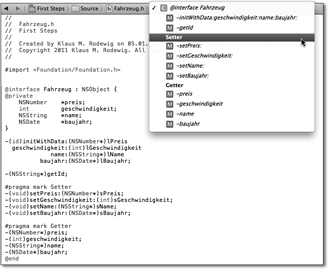Abbildung 2.13 Gruppierung der Methodenübersicht mit »#pragma«
| Die Punktnotation |
|
Objective-C erlaubt für den Aufruf von Zugriffsmethoden eine alternative Syntax. Anstelle der eckigen Klammern verwenden Sie hierfür einen Punkt, und bei den Settern lassen Sie das Präfix set weg. Die Anweisung [[self user] setName:[textField text]; self.user.name = textField.text; |
2.1.5 Eigene Methoden
Ein Objekt der Klasse Fahrzeug besitzt jetzt also Attribute und Accessoren, um auf diese Attribute zuzugreifen. Damit lässt sich schon fast eine Fahrzeugdatenbank aufbauen. Um der Klasse neben den Accessoren und den Standardmethoden init und alloc wenigstens eine Methode zu geben, die mehr als das reine Setzen oder Abrufen von Attributwerten macht, erhält die Klasse Fahrzeug jetzt noch die Methode getId, die eine eindeutige Kennung für jedes Fahrzeug erzeugt und ausgibt.
Die Deklaration der Methode getId ist einfach. Die Methode übernimmt keine Argumente und gibt als Rückgabewert einen Zeiger auf ein Objekt vom Typ NSString zurück.
-(NSString*)getId;
Zu Demonstrationszwecken ist die Implementierung etwas aufwendiger. Die Methode nimmt alle Attribute des Objekts, fügt sie als String hintereinander und erzeugt aus diesen Informationen einen SHA256-Hash. Mit diesem Hash lässt sich das Fahrzeug eindeutig identifizieren.
-(NSString*)getId {
NSLog(@"[+] %@", NSStringFromSelector(_cmd));
NSString *theKey = [NSString stringWithFormat:@"%@%0.2f%d%@", [self name], [[self preis] floatValue], [self geschwindigkeit], [self baujahr]];
unsigned char theCharacters[CC_SHA256_DIGEST_LENGTH];
NSMutableString *theHash = [NSMutableString stringWithCapacity:CC_SHA256_DIGEST_LENGTH];
CC_SHA256([theKey UTF8String],
[theKey lengthOfBytesUsingEncoding:NSUTF8StringEncoding], theCharacters);
for (int i = 0; i < CC_SHA256_DIGEST_LENGTH; ++i) {
[theHash appendString:[NSString stringWithFormat:@"%02x", theCharacters[i]]];
}
NSLog(@"[+] ID: %@", theHash);
return theHash;
}
Listing 2.12 Berechnung eines Kennungswertes
Die Methode setzt im ersten Teil alle Attributwerte zu einer Zeichenkette zusammen. Dabei verwendet sie die Getter und greift nicht direkt auf die Attribute zu. Dieses Vorgehen hat den Vorteil, dass Unterklassen die Getter überschreiben können und die Zeichenkette dann die überschriebenen Werte enthält.
Die Funktion zum Erzeugen des SHA256-Hashwertes lautet CC_SHA256 und ist in der Header-Datei CommonCrypto/CommonDigest.h deklariert, weswegen Xcode automatisch beim Eintragen der Funktion in den Editor die entsprechende #import-Anweisung anlegt:
#import <CommonCrypto/CommonDigest.
Diese C-Funktion gehört zum Betriebssystem und ist nicht Bestandteil des Foundation-Frameworks:
CC_SHA256(const void *data, CC_LONG len, unsigned char *md);
Als Parameter erwartet die Funktion beliebige Binärdaten, die Länge dieser Daten und ein char-Array für die Ablage des Hashwertes. Zunächst muss die Methode aber die Objective-C-Zeichenkette in Binärdaten umwandeln. Das geht am einfachsten, indem sie die C-Zeichenkette berechnet. Eine Zeichenkette repräsentiert C als Array von Zeichen mit einer abschließenden Null am Ende.
| Verwendung kryptografischer Funktionen |
|
Beim Einreichen von Apps mit kryptografischen Funktionen in den App-Store sind einige Zusatzfragen zur Export Compliance zu beantworten. Die verwendeten Funktionen dürfen dabei der US-Exportbeschränkung für Kryptografie nicht zuwiderlaufen. Überdies durchläuft jede App, die kryptografische Funktionen verwendet, einen gesonderten Prozess. An dessen Ende stellt die US-Regierung eine CCATS-Nummer aus, die die App freigibt. Dieser Prozess kann bis zu 30 Tage und länger dauern. |
Abbildung 2.14 Export Compliance bei Verwendung von Kryptografie
Aus dem berechneten SHA-256-Hash in der Variablen theCharacters muss die Methode wieder eine Objective-C-Zeichenkette erzeugen. Dafür verwendet sie ein Objekt der Klasse NSMutableString. Dabei erzeugt sie zu jedem Zeichen im Funktionsergebnis
unsigned char theCharacters[CC_SHA256_DIGEST_LENGTH];
die zugehörige, zweistellige Hexadezimaldarstellung. [12](Ein einzelnes, vorzeichenloses Zeichen in C hat den Typ unsigned char. Dieser Typ belegt unter Cocoa und Cocoa Touch immer genau ein Byte. Diese Zeichen können Sie aber auch als Zahlen zwischen 0 und 255 auffassen.)
Um die Methode getId aufzurufen, erweitern Sie die Datei main.m um den entsprechenden Methodenaufruf:
...
Fahrzeug *fahrzeug = [[Fahrzeug alloc] init];
[fahrzeug getId];
[fahrzeug autorelease];
...
Listing 2.13 Aufruf der Methode getId
Führen Sie das Programm nun aus, und beobachten Sie die Ausgabe auf der Konsole ohne den Zeitstempel und den Programmnamen:
[+] initWithPreis:geschwindigkeit:name:baujahr:
[+] getId
[+] ID: 411799869428242da044890c97403194b25f234849573cf2141ea84e7117d010
[+] dealloc
Nach dem Aufruf der Methode init erfolgt der Aufruf von initWithPreis: geschwindigkeit:name:baujahr: und anschließend der von getId, um am Ende über dealloc das Objekt freizugeben. So weit verhält sich das Programm wie erwartet.
2.1.6 Vererbung
Ein Grundmerkmal objektorientierter Programmierung ist, wie im ersten Kapitel beschrieben, die Vererbung. Im Beispiel der Klasse Fahrzeug wären Automobil und Motorrad denkbare Unterklassen. Damit lassen sich von der generischen und in der Praxis wenig brauchbaren Klasse Fahrzeug Spezialisierungen für konkrete Anwendungsbereiche erzeugen.
Natürlich könnte man die Klasse Fahrzeug so erweitern, dass sie alle notwendigen Informationen und Operationen auch für Autos und Motorräder aufnehmen beziehungsweise ausführen kann. Das führt aber sehr schnell zu einer sehr großen und unübersichtlichen Klasse. Sie müssen an jeder Stelle, wo das Verhalten von Autos und Motorrädern unterschiedlich ist, eine Fallunterscheidung einbauen. Das widerspricht also dem Grundgedanken der Strukturierung und Wiederverwendung. In vielen Fällen haben Sie aber keinen Zugriff auf den Quelltext der gewünschten Oberklasse, sodass sich die Option der Erweiterung einer bestehenden Klasse auch gar nicht anbietet. Wollten Sie beispielsweise NSObject erweitern, müssten Sie den Quelltext dieser Klasse haben. Den rückt Apple aber nicht heraus, und der geht Sie auch, offen gesagt, nichts an. Also erstellen Sie lieber eine Subklasse und fügen dort die gewünschten Änderungen ein.
Eine Unterklasse von Fahrzeug erzeugen Sie in Xcode analog zur Klasse Fahrzeug. Allerdings geben Sie im zweiten Schritt (siehe Abbildung 2.10) die Klasse Fahrzeug als Oberklasse ein und speichern die Klasse unter dem Namen Automobil. Die Schnittstelle der Klasse sieht wie folgt aus:
#import <Foundation/Foundation.h>
#import "Fahrzeug.h"
@interface Automobil : Fahrzeug
@end
Listing 2.14 Deklaration der Klasse »Automobil«
Die Import-Anweisung für das Interface der Klasse Fahrzeug ist notwendig, damit der Klasse Automobil die Eigenschaften der Superklasse bekannt sind. Welche Klasse die Superklasse ist, steht hinter dem eigenen Klassennamen. Mehr ist für das Erzeugen der neuen Subklasse nicht erforderlich – der Vorgang der Vererbung ist in Objective-C also wesentlich einfacher als im echten Leben.
Die Implementierung enthält zunächst lediglich die Methoden init und dealloc. Sofern keine Notwendigkeit besteht, müssen Sie diese Methoden nicht überschreiben.
#import "Automobil.h"
@implementation Automobil
- (id)init {
self = [super init];
if (self != nil) {
// Initialization code here.
}
return self;
}
- (void)dealloc {
// Clean-up code here.
[super dealloc];
}
@end
Listing 2.15 »init« und »dealloc« der »Automobil«-Klasse
| Namen und Schlüsselwörter |
|
Ein etwas weniger umständlicher Name als Automobil für die neue Klasse wäre Auto. Der Compiler hat zwar keine Einwände gegen diese Namenswahl. Da allerdings auto ein Schlüsselwort der Programmiersprache C und somit reserviert ist, riskieren Sie bei der Wahl von Variablen- und Attributnamen leicht Konflikte mit dem Übersetzer. |
Erzeugen Sie ein Objekt der Klasse Automobil, in dem Sie in der Datei main.m zunächst die Headerdatei von Automobil über
#import "Automobil.h"
importieren. Danach können Sie ein neues Auto analog zu den Fahrzeugen allozieren und initialisieren:
Automobil *automobil = [[Automobil alloc] init];
Senden Sie dem Objekt automobil, genauso wie vorher schon dem Objekt fahrzeug, nach der Initialisierung die Nachricht getId:
[automobil getId];
Führen Sie das Programm wieder aus, und beobachten Sie die Ausgabe auf der Konsole. Sie erhalten die folgende Ausgabe:.
--- Fahrzeug *fahrzeug = [[Fahrzeug alloc] init]; ---
[+] init
[+] initWithPreis:geschwindigkeit:name:baujahr:
--- Automobil *automobil = [[Automobil alloc] init]; ---
[+] init
[+] init
[+] initWithPreis:geschwindigkeit:name:baujahr:
--- [fahrzeug getId]; ---
[+] getId
[+] name
[+] preis
[+] geschwindigkeit
[+] baujahr
[+] ID: 673408a9d32cb6c15cae5c5bc3bf71fef27ef48e277e7fb8af80c3cac8b8b8e9
--- [automobil getId]; ---
[+] getId
[+] name
[+] preis
[+] geschwindigkeit
[+] baujahr
[+] ID: 673408a9d32cb6c15cae5c5bc3bf71fef27ef48e277e7fb8af80c3cac8b8b8e9
--- [fahrzeug release]; ---
[+] dealloc
--- [automobil release] ---
[+] dealloc
[+] dealloc
--- [pool drain]; ---
Listing 2.16 Ausgabe des Beispielprogramms
Die Konsolenausgabe zeigt schön, wie die Methodenaufrufe zwischen der Ober- und der Basisklasse verlaufen. Nach der Initialisierung des Objekts fahrzeug erfolgt die Initialisierung des Objekts automobil. Das Programm führt dafür zuerst die Init-Methode der Klasse Automobil aus, die ihrerseits die Init-Methode und darüber initWithPreis:geschwindigkeit:name:baujahr: der Oberklasse Fahrzeug aufruft.
Den Aufruf der Methode getId leitet das Objekt automobil ebenfalls an die Superklasse weiter, da Automobil diese Methode zwar geerbt, aber nicht überschrieben hat.
Die dealloc-Methode gibt zunächst die eigenen Ressourcen von Automobil und anschließend, durch den Aufruf der dealloc-Methode von Fahrzeug, dessen Ressourcen frei, weswegen Listing 2.16 zwei dealloc-Ausgaben für dem Aufruf der Methode enthält.
Bis hierher hat sich durch die Vererbung noch keine Änderung gegenüber der Superklasse ergeben. Darum überschreiben Sie jetzt in der Klasse Automobil die Methode getId aus der Klasse Fahrzeug. Um die von der Superklasse ererbte Methode zu überschreiben, müssen Sie diese nicht erneut im Interface deklarieren.
In der Implementierung der Methode getId ändern Sie den Hash-Algorithmus von SHA256 auf SHA512. Damit einhergehend müssen Sie auch die Größe des Puffers sowie die Anzahl der Schleifendurchläufe für die Iteration über den Hashwert auf SHA512 anpassen. Um die Ausgabe des neuen Hashwertes in der Konsole kenntlich zu machen, fügen Sie in der Log-Ausgabe noch eine 512 hinzu:
-(NSString*)getId {
NSLog(@"[+] %@", NSStringFromSelector(_cmd));
NSString *theKey = [NSString stringWithFormat:@"%@%0.2f%d%@", [self name], [[self preis] floatValue], [self geschwindigkeit], [self baujahr]];
unsigned char theCharacters[CC_SHA512_DIGEST_LENGTH];
NSMutableString *theHash = [NSMutableString stringWithCapacity:CC_SHA512_DIGEST_LENGTH];
CC_SHA512([theKey UTF8String],
[theKey lengthOfBytesUsingEncoding:NSUTF8StringEncoding], theCharacters);
for (int i = 0; i < CC_SHA512_DIGEST_LENGTH; ++i) {
[theHash appendString:[NSString stringWithFormat:@"%02x", theCharacters[i]]];
}
NSLog(@"[+] ID 512: %@", theHash);
return theHash;
}
Listing 2.17 Die Methode »getId« in der Klasse »Automobil«
Obwohl Sie den Aufruf der Methode getId in der Datei main.m nicht verändert haben, führt das Programm jetzt die getId-Methode der Klasse Automobil und nicht die von Fahrzeug aus. Die Ausgabe des Programms ändert sich wie folgt:
--- [automobil getId]; ---
[+] getId
[+] name
[+] preis
[+] geschwindigkeit
[+] baujahr
[+] ID 512: a58933990411851ba74c57a16b6b1a464a16c4203adad46c4fff270fdaa06a65fb45ef2f7498235af61803d282f014ec3a1a1fd338b67340af048a977363364c
Listing 2.18 Ausgabe der überschriebenen »getId«-Methode
Die Klasse Automobil hat zwar die Methode getId von Fahrzeug geerbt, diese aber überschrieben. Beim Aufruf von getId wird durch die Polymorphie automatisch zur Laufzeit die richtige Methode, und zwar die von Automobil, angesprochen.
Um die Klasse Automobil stärker auf die Eigenschaften eines Autos anzupassen, können Sie jetzt beliebige Attribute und Methoden hinzufügen. Entweder stellen diese eine Erweiterung der Superklasse dar oder überschreiben deren Eigenschaften. Hier ist eine mögliche Deklaration mit Erweiterungen:
@interface Automobil : Fahrzeug {
@private
NSDate *hauptUntersuchung;
unsigned int anzahlTueren;
double leistung;
}
#pragma mark Getter
-(NSDate *)hauptUntersuchung;
-(unsigned int)anzahlTueren;
-(double)leistung;
#pragma mark Setter
-(void)setHauptUntersuchung:(NSDate*)inDate;
-(void)setAnzahlTueren:(unsigned int)inTueren;
-(void)setLeistung:(double)inLeistung;
@end
Listing 2.19 Die Schnittstelle der Klasse »Automobil«
2.1.7 Kategorien
Eng mit der Vererbung verwandt sind Kategorien. Angenommen Sie möchten eine bestehende Klasse um eine oder mehrere Methoden erweitern, die Ihnen die Arbeit mit dieser Klasse erleichtert, dann können Sie eine Subklasse erzeugen und die neue Methode in der Subklasse verwenden. Das wird ziemlich viel Arbeit, wenn die Klassenhierarchie tief geschachtelt und vieles bereits implementiert ist. Außerdem ist es nicht immer möglich, eine Unterklasse zu verwenden. Sie können ja die Klasse eines Objekts nicht austauschen.
An dieser Stelle helfen Kategorien. Eine Kategorie ist die nachträgliche Definition einer oder mehrerer Methoden zu einer beliebigen Klasse, ohne von dieser Klasse ableiten zu müssen.
Kategorien funktionieren nicht nur für eigene, sondern für alle Klassen und vererben sich obendrein auch auf die Unterklassen der Klasse. Sie können beispielsweise mit einer Kategorie der Klasse NSObject neue Methoden hinzufügen, und alle Unterklassen erben diese neuen Methoden.
Ein Beispiel für eine Kategorie ist eine zusätzliche Methode für die Klasse NSString, die den gespeicherten String in der umgekehrten Reihenfolge ausgibt. Eine Kategorie besitzt, wie eine Klasse, eine eigene Header- und Implementierungsdatei. Fügen Sie daher eine neue Kategorie zu dem vorhandenen Xcode-Projekt hinzu, und geben Sie der Kategorie den Namen »ReverseString«. Xcode hält für Kategorien eine eigene Vorlage, Objective-C category, bereit (siehe Abbildung 2.15).
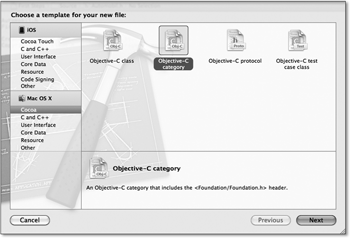Abbildung 2.15 Xcode besitzt ein Template für Kategorien.
Geben Sie nach deren Auswahl die Klasse NSString an, auf der die Kategorie basieren soll. Als Kategorienamen verwenden Sie »ReverseString« (siehe Abbildung 2.16).
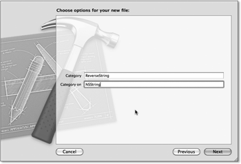Abbildung 2.16 Name und Klasse der Kategorie
Nach dem Hinzufügen der Kategorie mit dem Xcode-Wizard sieht die Headerdatei wie folgt aus:
#import <Foundation/Foundation.h>
@interface NSString (ReverseString)
@end
Listing 2.20 Headerdatei einer Kategorie
Im Vergleich zu einem Klassen-Interface fehlen der Kategorie der Bezug auf die Superklasse und der Block für die Attribute. Dafür steht der Name der Kategorie in Klammern hinter dem Namen der zu erweiternden Klasse. Das gilt auch für die Implementierung:
#import "ReverseString.h"
@implementation NSString (ReverseString)
@end
Listing 2.21 Implementierung der Kategorie
Erweitern Sie die Deklaration um die Methode reverseString:
@interface NSString (ReverseString)
-(NSString*)reverse;
@end
Listing 2.22 Methodendeklaration in einer Kategorie
Die Implementierung der Methode ist reine Fleißarbeit, da das Umdrehen von Strings nicht zu den geistig anspruchsvollsten Arbeiten gehört:
-(NSString*)reverse{
NSlog(@"[+] revert: %@", self);
NSMutableString *theReverse = [NSMutableString stringWithCapacity:[inString length]];
for(int i = [inString length]-1; i>=0; i--){
[theReverse appendFormat:@"%C", [inString characterAtIndex:i]];
}
NSlog (@"[+] the reverse: %@", theReverse);
return theReverse;
}
Wenn Sie anschließend in der Datei main.m die Headerdatei der neuen Kategorie über #import "ReverseString.h" importieren, können Sie die Methode reverseString dort verwenden. Sie können das überprüfen, indem Sie in der main-Funktion einen Aufruf von reverse hinzufügen:
int main (int argc, const char * argv[]) {
NSAutoreleasePool *pool = [[NSAutoreleasePool alloc] init];
[@"Wortverdreher" reverse];
...
}
Listing 2.23 Aufruf der Kategoriemethode »reverse«
Beim nächsten Programmlauf zeigt die Konsole das erwartete Ergebnis an:
[+] revert: Wortverdreher
[+] the reverse: reherdrevtroW
Die Klasse NSString verfügt jetzt über eine zusätzliche Methode, und das, ohne eine Subklasse ableiten zu müssen. Einfacher geht’s nicht. Kategorien können zwar Methoden, aber keine Attribute zu den Klassen hinzufügen.
| Verwenden Sie es sparsam! |
|
Sie können jetzt natürlich anfangen und alle möglichen Klassen mit Kategorien erweitern. Dadurch verlieren Sie aber schnell die Übersicht über Ihre Methoden. Sofern es mehrere Kategorien mit den gleichen Methoden zu einer Klasse gibt, ist außerdem nicht festgelegt, welche dieser Methoden das Laufzeitsystem aufruft. Das kann zu unerwarteten Ergebnissen führen. Sie können mit Kategorien auch die Methoden der Superklasse überschreiben. Das sollten Sie aber nur machen, wenn die Klasse das nicht schon selber macht. Verwenden Sie Kategorien daher gezielt und wohlüberlegt. |
Mit der anonymen Kategorie gibt es noch einen Sonderfall. Wie der Name schon andeutet, hat sie keinen Namen. Stattdessen geben Sie bei der Deklaration nur ein leeres Klammerpaar an.
@interface Fahrzeug()
...
@end
Listing 2.24 Deklaration einer anonymen Kategorie
Die Implementierung ihrer Methoden erfolgt aber nicht in einem entsprechenden Implementierungsblock, sondern bei der Implementierung der Methoden der Klasse. Auch anonyme Kategorien haben den Zweck, ihre Klassen um Methoden zu erweitern. Im Gegensatz zu den anderen Kategorien sollen deren Methoden aber nicht öffentlich zugänglich sein. Sie können über die anonyme Kategorie also geschützte Methoden einer Klasse deklarieren. Aus diesem Grund erfolgt ihre Deklaration auch in der Implementierungsdatei der Klasse. Sie können beispielsweise die Klasse Fahrzeug um eine Logging-Methode erweitern:
@interface Fahrzeug()
- (void)logWithSelector:(SEL)inSelector;
@end
@implementation Fahrzeug
...
- (int)geschwindigkeit {
[self logWithSelector:_cmd];
return geschwindigkeit;
}
- (void)logWithSelector:(SEL)inSelector {
NSLog(@"%@[%@] %@", [self class], [self name], NSStringFromSelector(inSelector)];
}
@end
2.1.8 Protokolle
Ein weiteres wichtiges Sprachmerkmal von Objective-C sind Protokolle. Protokolle bündeln Methoden, die nicht zu einer bestimmten Klasse gehören. Damit lässt sich die vermeintliche Beschränkung der fehlenden Mehrfachvererbung in Objective-C kompensieren. Um einer Klasse mehr vordeklarierte Methoden als nur von einer Superklasse hinzuzufügen, kann die Klasse über ein Protokoll weitere Methoden adaptieren. Protokolle bestehen im Gegensatz zu Klassen und Kategorien aber immer nur aus einer Deklaration. Die Implementierung erfolgt immer in den adaptierenden Klassen.
Das Schlüsselwort @protocol kennzeichnet eine Protokolldeklaration. Wenn Sie beispielsweise eine einheitliche Methode zum Datenladen für Ihre Klassen haben möchten, können Sie das über ein Protokoll beschreiben:
@protocol Loadable
@required
- (void)loadFromFile:(NSString *)inPath;
@optional
- (void)loadFromURL:(NSURL *)inURL;
@end
Listing 2.25 Deklaration eines Protokolls
Die Protokollmethoden können Sie als zwingend erforderlich (@required) und optional (@optional) deklarieren. Erforderliche Methoden muss jede adaptierende Klasse implementieren, während Sie sich das bei optionalen Methoden aussuchen können. Jede Klasse, die das Beispielprotokoll Loadable adaptiert, muss also die Methode loadFromFile: implementieren. Standardmäßig sind alle Protokollmethoden erforderlich.
Sie können dann bei der Deklaration einer Klasse das Protokoll in spitzen Klammern hinter der Oberklasse angeben:
#import "Loadable.h"
@interface Fahrzeug : NSObject<Loadable> {
...
}
...
@end
Listing 2.26 Adaption eines Protokolls durch eine Klasse
Sie können natürlich auch mehrere Protokolle in einer Klasse implementieren. In diesem Fall trennen Sie die Namen der Protokolle in den spitzen Klammern einfach durch jeweils ein Komma. Protokolle über Kategorien zu implementieren, ist auch möglich. Hierfür platzieren Sie die spitzen Klammern einfach hinter den runden Klammern in der Kategoriedeklaration.
@interface Fahrzeug(Loading)<Loadable>
...
@end
Listing 2.27 Adaption eines Protokolls über eine Kategorie
Das funktioniert natürlich auch mit mehreren Protokollen und auch bei anonymen Kategorien.
Ihr Kommentar
Wie hat Ihnen das <openbook> gefallen? Wir freuen uns immer über Ihre freundlichen und kritischen Rückmeldungen.


{kind=link}
{kind=link}
{kind=link}
{kind=link}
{kind=link}
{kind=link}
{kind=link}
{kind=link}
{kind=link}
{kind=link}
{kind=link}
{kind=link}
{kind=link}
{kind=link}
{kind=link}
{kind=link}